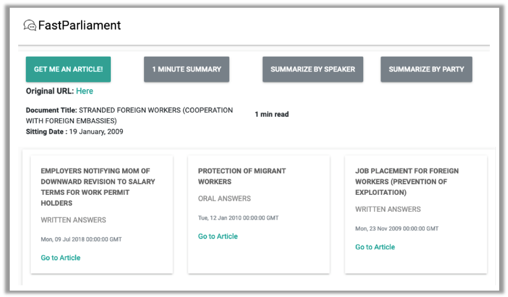
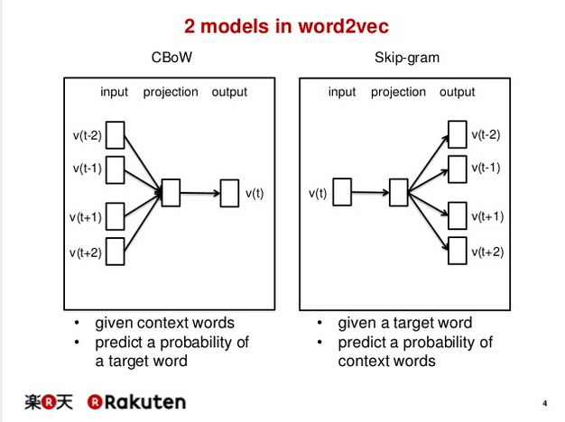
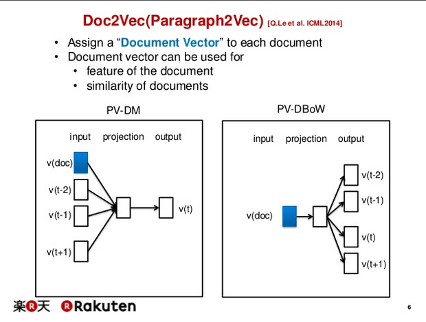

This is the third of a multi part series that details the processes behind FastParliament. You may view the previous post here:
Table of Contents
For this post, I will be focusing on the content discovery component of FastParliament.
If you have been around FastParliament, you may have observed that each time an article is retrieved from the system, a series of articles are also put forth - which are related to the content of the primary article. Usually, to do so in conventional systems would require the use of “tags” that article has to allow the system to “cough” out articles with similar tags.

Content Discovery
This works well for a small corpus of say, 50 to at most 200 articles. However, the solution obviously does not scale very well, if not at all. Furthermore, the tagging system can be highly arbitrary, where each person can have their own interpretation of what tags are contained in a particular article.
Recap of Vector Representations
In the previous article, sentence vectors were created out of the TF-IDF method where the vector represented weighted frequencies of a particular word in a text.
While that works for the particular use case, semantics are often lost when we are merely looking at counts of a particular word in the document.
Enter Word2Vec
Most portions of this description are based on the writeup by Gidi Shperber in which he has a good summary on Doc2Vec.
Word2Vec is a technique to capture contexts between words. There are two key models in word2vec - namely Continuous Bag of Words(CBoW) and Skip-Gram. For CBoW a sliding window is created around a bunch of words or context with the objective of predicting the probability of the target word. In Skip-Gram, the opposite occurs in which we want to predict the context (“surrounding words”) given a specific word.
Depending on the case use, one particular model may be preferred over another.

Word2Vec Methods Illustration Obtained from Rakuten
The end result, or representations would be somewhat visualised as below:
.](https://www.tensorflow.org/images/linear-relationships.png)
Semantic Representation from word vectors. Obtained from tensorflow docs.
So, then where does that leave us?
Knowing that there is a way to represent text as vector representations that is context-aware would mean that we can apply the same concept to our Hansard corpus.
This would require converting each document to its vector representation in relation to the entire corpus.
Doc2Vec : An Extension of Word2Vec
One key consideration between the Doc2Vec and Word2Vec is that documents and words don’t share the same logical structures. The continuous representation that we see in a line of text may not be the same as a line of documents.
To get around this problem, an additional vector is fed into either the Doc2Vec version of either the CBoW or the Skip-Gram method. This additional vector is referred to as the document vector which is essentially the “ID” of the document.

Doc2Vec Methods Illustration Obtained from Rakuten
In this case the CBoW now becomes Document Vector Distributed Bag of Words (DV-DBoW) while the Skip-Gram approach is now called Document Vector Distributed Memory (DV-DM) in which the document vector acts as a “memory” to assist in identifying the context of the particular word in a document. Essentially, it extends the concept of a particular word beyond the sliding window to between various documents.
Applying Doc2Vec for FastParliament
Now, with these concepts in hand, we look at applying the same approaches to our corpus with the objective of generating document to document recommendations to aid in content discovery.
Walkthrough of Doc2Vec Process
In this example, I will be using gensim’s doc2vec generator to generate the vectors. I will also extend this further by showing how I operationalized this on FastParliament.
1. Import Libraries
import gensim
from gensim.utils import simple_preprocess
import pymongo
import pandas as pd
import numpy as np
from bson import ObjectId
from sklearn.model_selection import train_test_split2. Read in Data from MongoDB
client = pymongo.MongoClient("mongodb://localhost:27017/")
db = client["parliament"]
articles = db["articles"]mongo_df = pd.DataFrame.from_records(remote_articles.find())
mongo_df.head()| _id | article_text | chunks | cleaned_join | dominant_topic | html_clean | parliament_num | parsed_convo | persons_involved | session_num | session_type | sitting_date | sitting_num | src_url | title | volume_num | |
|---|---|---|---|---|---|---|---|---|---|---|---|---|---|---|---|---|
| 0 | 5d27eca6172d9aa762d4802f | <p>[(proc text) Debate resumed. (proc text)]</... | {"0": {"entity": "NA", "content": "[(proc text... | [(proc text) Debate resumed. (proc text)]<br/>... | Society | [[(proc text) Debate resumed. (proc text)], Mr... | 13 | [{'content': '[(proc text) Debate resumed. (pr... | [Mr Leon Perera, Mr K Shanmugam, Assoc Prof Wa... | 2 | SECOND READING BILLS | 2019-05-08 | 105 | https://sprs.parl.gov.sg/search/sprs3topic?rep... | PROTECTION FROM ONLINE FALSEHOODS AND MANIPULA... | 94 |
| 1 | 5d27eca6172d9aa762d48030 | <p class="ql-align-justify">4 <strong>Mr Vikra... | {"0": {"entity": "NA", "content": "Mr Vikram N... | Mr Vikram Nair asked the Minister for Foreign ... | Society | [Mr Vikram Nair asked the Minister for Foreign... | 13 | [{'content': 'Mr Vikram Nair asked the Ministe... | [Dr Vivian Balakrishnan, The Minister for Fore... | 2 | ORAL ANSWERS | 2019-05-08 | 105 | https://sprs.parl.gov.sg/search/sprs3topic?rep... | STATE OF BILATERAL RELATIONS WITH MALAYSIA FOL... | 94 |
| 2 | 5d27eca6172d9aa762d48031 | <p class="ql-align-justify">8 <strong>Assoc Pr... | {"0": {"entity": "NA", "content": "Assoc Prof ... | Assoc Prof Walter Theseira asked the Minister ... | Internal Security | [Assoc Prof Walter Theseira asked the Minister... | 13 | [{'content': 'Assoc Prof Walter Theseira asked... | [Ms Low Yen Ling, Ms Anthea Ong, Assoc Prof Wa... | 2 | ORAL ANSWERS | 2019-05-08 | 105 | https://sprs.parl.gov.sg/search/sprs3topic?rep... | COMPANIES WITH MEASURES TO DEAL WITH WORKPLACE... | 94 |
| 3 | 5d27eca6172d9aa762d48032 | <p>5 <strong>Ms Irene Quay Siew Ching</strong>... | {"0": {"entity": "NA", "content": "Ms Irene Qu... | Ms Irene Quay Siew Ching asked the Minister fo... | Environment | [Ms Irene Quay Siew Ching asked the Minister f... | 13 | [{'content': 'Ms Irene Quay Siew Ching asked t... | [The Senior Minister of State for Health, Dr L... | 2 | ORAL ANSWERS | 2019-05-08 | 105 | https://sprs.parl.gov.sg/search/sprs3topic?rep... | REVIEW OF DRUG TESTING STANDARDS IN SINGAPORE ... | 94 |
| 4 | 5d27eca6172d9aa762d48033 | <p class="ql-align-justify">2 <strong>Mr Lim B... | {"0": {"entity": "NA", "content": "Mr Lim Biow... | Mr Lim Biow Chuan asked the Deputy Prime Minis... | Employment | [Mr Lim Biow Chuan asked the Deputy Prime Mini... | 13 | [{'content': 'Mr Lim Biow Chuan asked the Depu... | [Ms Indranee Rajah, The Second Minister for Fi... | 2 | ORAL ANSWERS | 2019-05-08 | 105 | https://sprs.parl.gov.sg/search/sprs3topic?rep... | LIVING IN PRIVATE PROPERTIES BUT WITH NO DECLA... | 94 |
3. Text Preprocessing
In read_corpus we iterate through the dataframe above and then use the TaggedDocument function in Gensim to tag a document ID to each document. We can then use this document ID to retrieve additional metadata from our DB after the process is complete.
def read_corpus(series_docs, tokens_only=False):
for line in series_docs.itertuples():
if tokens_only:
yield simple_preprocess(line.cleaned_join)
else:
# For training data, add tags
yield gensim.models.doc2vec.TaggedDocument(simple_preprocess(line.cleaned_join), tags=[str(line._1)])Create a list of documents with tags:
corpus = list(read_corpus(mongo_df,tokens_only=False))Display a sample tag:
corpus[1].tags['5d27eca6172d9aa762d48030']4. Instantiating a Doc2Vec GenSim Instance
The vector_size, min_count and epochs are some hyperparameters that can be tuned down the road. I used this as it gave a relatively quick training time. In general, larger vectors result in larger training times and it exponentially scales.
model = gensim.models.doc2vec.Doc2Vec(vector_size=50, min_count=3, epochs=100, workers=4)5. Build a Vocabulary
model.build_vocab(corpus)%time model.train(corpus, total_examples=model.corpus_count, epochs=model.epochs)CPU times: user 20min 22s, sys: 6.98 s, total: 20min 29s
Wall time: 6min 42s6. Save Model
model.save('doc2vec')We delete training data to reduce in-memory usage after training is complete.
model.delete_temporary_training_data()7. Load Model
We can load the model at any time, and this is crucial for deploying it to production.
model = gensim.models.doc2vec.Doc2Vec.load('doc2vec')8. Sample Inference
In this portion, I will demonstrate how to use the inference to be able to generate a list of similar documents which will then be tied in to our production model.
The infer_vector method is called on the class model that is an instance of our doc2vec saved model which spits out the vectors.
inference_1 = model.infer_vector(corpus[291].words)Using this, we generate a list of tuples with the id at index 0 and the score at index 1.
results = model.docvecs.most_similar([inference_1])
display(results)[('5d27eca6172d9aa762d48152', 0.992645263671875),
('5d27eca6172d9aa762d49ef0', 0.9119903445243835),
('5d27eca6172d9aa762d48b2d', 0.907822847366333),
('5d27eca6172d9aa762d48fc3', 0.8947123289108276),
('5d27eca6172d9aa762d492f7', 0.8905215859413147),
('5d27eca6172d9aa762d49304', 0.8838604688644409),
('5d27eca6172d9aa762d48639', 0.8791929483413696),
('5d27eca6172d9aa762d49673', 0.8630969524383545),
('5d27eca6172d9aa762d49aac', 0.8347380757331848),
('5d27eca6172d9aa762d48b5c', 0.8256769180297852)]We can see that most_similar returns a list of tuples with the document ID and its respective probability.
Using this knowledge, we can use this to retrieve content from our database.
mongo_df[mongo_df['_id'] == ObjectId('5d27eca6172d9aa762d48152')]| _id | article_text | chunks | cleaned_join | dominant_topic | html_clean | parliament_num | parsed_convo | persons_involved | session_num | session_type | sitting_date | sitting_num | src_url | title | volume_num | |
|---|---|---|---|---|---|---|---|---|---|---|---|---|---|---|---|---|
| 291 | 5d27eca6172d9aa762d48152 | <p><strong>The Chairman</strong>: Head P, Mini... | {"0": {"entity": "The Chairman", "content": " ... | The Chairman: Head P, Ministry of Home Affairs... | Internal Security | [The Chairman: Head P, Ministry of Home Affair... | 13 | [{'content': 'The Chairman: Head P, Ministry o... | [Mrs Josephine Teo, Mr Yee Chia Hsing, Ms Jess... | 2 | BUDGET | 2019-03-01 | 96 | https://sprs.parl.gov.sg/search/sprs3topic?rep... | COMMITTEE OF SUPPLY - HEAD P (MINISTRY OF HOME... | 94 |
9. Using it in Production
Following that, for our production model, we can create a function that spits out the top 5 similar documents for any document ID that is fed in.
def fetch_recommended_document(document_id,mongo_conn,model,n_results=5):
"""
Fetch documents from mongoDB based on inference
"""
document = mongo_conn.parliament.articles.find_one({'_id': ObjectId(document_id)})
inference = model.infer_vector(document['cleaned_join'].split())
results = model.docvecs.most_similar([inference])
ids = []
for item in results[:n_results]:
ids.append(ObjectId(item[0]))
recommends = []
for recommend in mongo_conn.parliament.articles.find({"_id" : {"$in" : ids }}):
recommends.append({
"_id" : recommend["_id"],
"title" : recommend["title"],
"sitting_date" : recommend["sitting_date"],
"session_type" : recommend["session_type"]
})
return recommends
A sample call:
fetch_recommended_document('5d27eca6172d9aa762d48b2d',remote_client,model,6)[{'_id': ObjectId('5d27eca6172d9aa762d48152'),
'title': 'COMMITTEE OF SUPPLY - HEAD P (MINISTRY OF HOME AFFAIRS)',
'sitting_date': datetime.datetime(2019, 3, 1, 0, 0),
'session_type': 'BUDGET'},
{'_id': ObjectId('5d27eca6172d9aa762d48639'),
'title': 'COMMITTEE OF SUPPLY – HEAD P (MINISTRY OF HOME AFFAIRS)',
'sitting_date': datetime.datetime(2018, 3, 2, 0, 0),
'session_type': 'MOTIONS'},
{'_id': ObjectId('5d27eca6172d9aa762d48b2d'),
'title': 'COMMITTEE OF SUPPLY − HEAD P (MINISTRY OF HOME AFFAIRS)',
'sitting_date': datetime.datetime(2017, 3, 3, 0, 0),
'session_type': 'MOTIONS'},
{'_id': ObjectId('5d27eca6172d9aa762d48fc3'),
'title': 'COMMITTEE OF SUPPLY – HEAD P (MINISTRY OF HOME AFFAIRS)',
'sitting_date': datetime.datetime(2016, 4, 6, 0, 0),
'session_type': 'MOTIONS'},
{'_id': ObjectId('5d27eca6172d9aa762d492f7'),
'title': 'HEAD P – MINISTRY OF HOME AFFAIRS (COMMITTEE OF SUPPLY)',
'sitting_date': datetime.datetime(2015, 3, 6, 0, 0),
'session_type': 'MOTIONS'},
{'_id': ObjectId('5d27eca6172d9aa762d49ef0'),
'title': 'COMMITTEE OF SUPPLY ˆ’ HEAD P (MINISTRY OF HOME AFFAIRS)',
'sitting_date': datetime.datetime(2012, 3, 1, 0, 0),
'session_type': 'BUDGET'}]Conclusion
While this chapter is pretty short, it covered the concept of vectorization and its applications. As you can see, Doc2Vec is a remarkable tool - especially when pared with recommendation systems such that we can now create semantically aware features that can then be used in classification models.
For example, we can pair this with user preferences to generate a predictive model to access how likely a particular product would appeal to a certain user.
In the next portion of the writeup, I will be touching upon topic modelling that is being used to generate insights on our existing corpus.